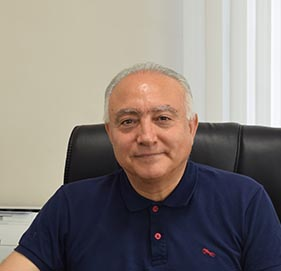

|

Name: Ali Movaghar, Emeritus Professor Curriculum Vita (as of August 2025)
Ph.D. in
Computer, Information and Control Engineering, The University of
Michigan,
Ann Arbor, MI, USA, 1985. Title of
thesis: Performability
modeling with stochastic activity networks. M.S. in Computer,
Information and Control Engineering, The University of Michigan, Ann
Arbor, MI, USA, 1979. B.S. in
Electrical Engineering, University of Tehran, Tehran,
Iran, 1977.
June 2024 -
now:
Emeritus Professor - Department of Computer Engineering,
Sharif University of Technology, Tehran, Iran. January
2025 - August 31, 2015: Research Scholar, Division of Computer Science and
Engineering (CSE), Department of Electrical Engineering and Computer Science
(EECS), The University of Michigan, Ann Arbor, MI, USA. August 2023
- December 2024:
Visiting Professor, Division of Computer Science and Engineering (CSE),
Department of Electrical Engineering and Computer Science (EECS), The
University of Michigan, Ann Arbor, MI, USA. February
2007 - June 2024: Professor,
Department of Computer Engineering, Sharif University of Technology, Tehran,
Iran. October
2015 - November 2017: Dean of International Affairs, Sharif University of
Technology, Tehran, Iran. May 2015 -
November 2015:
Chair, Information Technology Division, Department of Computer Science and
Engineering, Sharif University of Technology, Tehran, Iran. October
2012 - October 2014: Chair, Software Division, Department of Computer
Science and Engineering, Sharif University of Technology, Tehran, Iran. January
2011 - August 2011: On Sabbatical Leave in the Department of
Electrical Engineering and Computer Science, University of California,
Irvine, CA, USA. 2009-2011: Chair,
Information Technology Division, Department of Computer Science and
Engineering, Sharif University of Technology, Tehran, Iran. 2007-2008: Dean of
Graduate Studies, School of Science and Engineering, International Campus of
Sharif University of Technology at Kish Island, Persian Gulf, Iran. 2002-2006: Chair,
Graduate Committee, Department of Computer Science and Engineering, Sharif
University of Technology, Tehran, Iran. 2003-2004: Chair,
Software Division, Department of Computer Science and Engineering, Sharif
University of Technology, Tehran, Iran. 1998-2000: Chair,
Software Division, Department of Computer Science and Engineering, Sharif
University of Technology, Tehran, Iran. 1995-1996: Chair,
Graduate Committee, Department of Computer Science and Engineering, Sharif
University of Technology, Tehran, Iran.
Performance
Analysis Formal
Methods Distributed
Real-Time Systems Internet of
Things AI
Member of
Editorial Board, Queueing Models and Service
Management (QMSM) Member of
Editorial Board, International Journal
of Information Communication Technology (IJICT) Member of
Editorial Board, journal of AI and Data
Mining (JADM) Member of Editorial Board, Iran Journal of
Computer Science (IJCS) Member of
Editorial Board, Journal of Algorithms
and Computation (JAC) Editor-in-Chief, Journal of Computer
and Robotics (JCR) Editor-in-Chief, Journal of Advances in
Computer Research (JACR) Editor-in-Chief, Journal of Computer
Science and Information Technology (JCSIT)
Distinguished
Researcher of Sharif University of Technology in 2005 and 2019 Distinguished
Professor of the Iranian Academy of Sciences in 2021
Senior
Member of the Institute of Electrical and Electronics Engineers (IEEE) Senior
Member of the Association for Computing Machinery (ACM) Associate
Member of the Iranian Academy of Sciences
Journal/Electronic
Notes papers 1. H. Zarini, N. Gholipoor, M. Robat Mili, M. Rasti, and A. Movaghar, Multiplexing B5G/6G Services
over Aerial VLC Networks: A Comprehensive Radio Resource
Management Framework,
IEEE Internet of Things Journal, Vol. 12, No. 9, pp. 11600- 11621, 2025.. 2. I. Rahmati, H. Shah-Mansouri, and
A. Movaghar, QECO: A QoE-Oriented Computation Offloading Algorithm based on
Deep Reinforcement Learning for Mobile Edge Computing, IEEE Transactions
on Network Science and Engineering, Vol. 12, No. 4, pp. 3118- 3130, 2025. 3. Majid
Alizadeh, Amirhoshang Hoseinpour
Dehkordi, and Ali Movaghar, Meet Masks: Integrated distributed knowledge and veri cation for multiagent systems, Soft Computing,
Vol. 107, No. 17, 2025. 4. B. Ganji, A. Rezaee, S. Adabi, and A. Movaghar, Model
verification of real-time and distributed stream processing architecture, Computing, Vol. 107, No.
17, 2025. 5. Z.
Shamsa, A. Rezaee, S. Adabi, A. Movaghar Rahimabadi
and A.M.Rahmani, A distributed load balancing method for
IoT/Fog/Cloud environments with volatile resource support,
Cluster Computing, Vol. 27, No.4, pp. 4281-4320, 2024. 6. M.
Rezakhani, N. Sarrafzadeh-Ghadimi, R.
Entezari-Maleki, L. Sous and A. Movaghar, Energy-aware QoS-based
dynamic virtual machine consolidation approach based on RL and ANN, Cluster
Computing, Vol. 27, No. 1, pp. 827-843, 2024. 7. M.
Hosseini, S. Darabi, A.H. Jahangir and A. Movaghar, Yuz: Improving Performance of Cluster-Based
Services by Near-L4 Session-Persistent Load Balancing, IEEE
Transactions on Network and Service Management, Vol 21, No. 2, pp.1929-1942,
2024 8. L.
Rashidi, D. Towsley, A. Mohseni-Kabir and A. Movaghar, On the Performance
Analysis of Epidemic Routing in Non-Sparse Delay Tolerant Networks, IEEE
Transactions on Mobile Computing, Vol. 22, No. 7, pp. 4134-4149, 2023. 9. B.
T. Tabarsi, A. Rezaee, A. Movaghar, ROGI: Partial Computation
Off-loading and Resource Allocation in the Fog-Based IoT Network Towards
Optimizing Latency and Power Consumption, Cluster Computing, Vol. 26,
No. 3, pp.1767-1784, 2023. 10. F. Beikzadeh Abbasi,
A. Rezaee, S. Adabi, A. Movaghar, Fault-tolerant scheduling of graph-based loads on
fog/cloud environments with multi- level queues and LSTM-based workload
prediction,
Computer Networks, Vol. 235, 109964, 2023. 11. S.
Karimian-Aliabadi, M.M. Aseman-Manzar, R. Entezari-Maleki, D. Ardagna,
B. Egger and A. Movaghar, Fixed-point Iteration Approach to Spark Scalable
Performance Modeling and Evaluation, IEEE Transactions on Cloud Computing, Vol. 11, No. 1, pp.
897-910, 2023. 12. M.M. Aseman-Manzar,
S. Karimian Aliabadi, R. Entezari-Maleki, B. Egger, A. Movaghar, Cost-Aware Resource Recommendation
for DAG-Based Big Data Workflows: An Apache Spark Case Study, IEEE Transactions on Service
Computing, Vol.16, No. 3, pp. 726-1737, 2023. 13. A.
Amini Motlagh, A. Movaghar and A.M. Rahmani,A New Reliability-Based Task
Scheduling Algorithm in Cloud-Computing, International Journal of Communication Systems, �Vol.
35, No. 3, 2022. 14. M.
Bagheri, M. Sirjani, E. Khamespanah, C. Baier
and A. Movaghar, Magnifier: A
Compositional Analysis Approach for Autonomous Traffic Control, IEEE Transactions on Software
Engineering, Vol. 48, No. 8, pp. 2732-2747, 2022. 15. S. Aalibagi,
H. Mahyar, A. Movaghar and H.E. Stanley, A Matrix Factorization
Model for Hellinger-based Trust Management in Social Internet of Things, IEEE Transactions on
Dependable and Secure Computing, Vol. 19, No. 4, 2274-2285, 2022. � 16. E. Ataie, R. Entezari-Maleki, S.E. Etesami,
B. Egger, L. Sousa and A. Movaghar, Modeling and Evaluation of Dispatching Policies in Iaas Cloud Centers using SANs,
Sustainable Computing: Informatics and Systems, Vol. 33, 100617, 2022. 17. E. Heidari, A.
Movaghar, H. Motameni and B. Barzegar, A novel approach
for clustering and routing in WSN using genetic algorithm and equilibrium
optimizer, International
Journal of Communication Systems, Vol.
35, No. 10, 2022. 18. R. Ghafouri
and A. Movaghar, An adaptive and
deadline-constrained workflow scheduling algorithm in infrastructure as a
service clouds, Iran
Journal of Computer Science, Vol. 5, No. 1, 2022.� 19. R. Ghazali,
S. Adabi, A. Rezaee, D.G. Down and A. Movaghar, 20. H. Mohtashami, A. Movaghar, M. Teshnehlab, Lifetime Improvement Based on Event
Occurrence Patterns for Wireless Sensor Networks Using Multi-Objective
Optimization, Wireless Personal
Communications, Vol. 125, No.4, pp. 3333-3349, 2022. 21. S.M. Safi, A. Movaghar and M. Ghorbani, Privacy protection
scheme for mobile social network, J. King Saud Univ. Comput. Inf. Sci. Vol. 34, No. 7, pp. 4062-4074,
2022. 22. M.S. Yousefpoor, E. Yousefpoor,
H. Barati, A. Barati, A. Movaghar and M. Hosseinzadeh, Secure data
aggregation methods and countermeasures against various attacks in wireless
sensor networks: A comprehensive review, Journal of Network and Computer
Applications, Vol. 14, pp. 1917-1942, 2021. 23. S.M.
Safi, A. Movaghar and K. Safikhani
Mahmoodzadeh, A framework for protecting
privacy on mobile social networks, Mobile
Networks and Applications, �Vol. 26, No. 3, pp. 1289-1299, 2021. 24. M.
Ahmadi, M. Golkarifard, A. Movaghar and Hamed Yousefi, Processor Sharing
Queues with Impatient Customers and State-dependent Rates, IEEE/ACM
Transactions on Networking (TON), Vol. 29, No. 6, pp. 2467-2477, December
2021. 25. P.
Khanzadi, B. Majidi, S. Adabi, J.C. Patra and
A. Movaghar, Robust fuzzy rough set
based dimensionality reduction for big multimedia data hashing and
unsupervised generative learning, Multimedia
Tools and Applications, Vol. 80, No. 12, pp. 17745-17772, 2021. 26. M. Golkarifard,
A. Movaghar, Dynamic VNF Placement,
Resource Allocation and Traffic Routing in 5G, Computer Networks, Vol. 188,
pp. 107830, April 2021. 27. M.
Faraji Shoyari, E. Ataie, R. Entezari-Maleki
and A. Movaghar, Availability Modeling
in Redundant OpenStack Private Clouds, Software: Practice and Experience,
Vol. 51, No.6, pp. 1218-1241, June 2021. 28. S.M.
Safi, A. Movaghar and K. Safikhani
Mahmoodzadeh, A framework for
protecting privacy on mobile social networks, Mobile Networks and Applications,
Vol. 26, No. 3, pp. 1289-1299, 2021. 29. S.H.
Ghafouri, S.M. Hashemi, M.R. Razzazi and A. Movaghar, Web service quality of
service prediction via regional reputation-based matrix factorization, Concurrency and Computation:
Practice and Experience, Vol. 33, No. 17, September 2021. 30. R.
Ghazali, S. Adabi, D.G. Down and A. Movaghar, A classification
of hadoop job schedulers based on
performance optimization approaches, Cluster Computing, Vol. 24,
No. 4, pp.3381-3403, 2021. 31. P.
Khanzadi, S. Adabi, B. Majidi and A.
Movaghar, Optimal VM-to-user
mapping in cloud environment based on sustainable strategy space theory, Cluster Computing, Vol. 24, No. 4,
pp. 3329-3347, 2021. 32. L.
Rashidi, A. Dalili-Yazdi, R. Entezari-Maleki, L. Sousa and A. Movaghar, Modeling Epidemic
Routing: Capturing Frequently Visited Locations While Preserving Scalability, IEEE
Transactions on Vehicular Technology, Vol. 70, No. 3, pp. 2713-2727, March
2021. 33. S.
Rezaei, M. Gharib, R. Entezari-Maleki, K. Trivedi and A. Movaghar, Modeling and Evaluation of Multi-hop
Wireless Networks using SRNs, IEEE Transactions on Network Science and Engineering,
Vol. 8, No. 1, pp. 662-679, 2021. 34. M. Askarnejad,
M. Malekimajd and A. Movaghar, Network and
Application-Aware Cloud Service Selection in Peer-Assisted Environments, IEEE Transactions on Cloud
Computing, Vol. 9, No. 1, pp. 258-271, 2021. 35. M. Malekimajd and
A. Movaghar, Minimizing
data access latencies for virtual machine assignment in cloud systems, IEEE
Transactions on Service Computing, Vol.13, No.5, October 2020. 36. M. Gharib, A. Foroozani, S. Rezaei,
A.M.A. Hemmatyar and A. Movaghar, An
area-scalable human-based mobility model, Computer
Networks, Vol. 177, August 2020. 37. Amini
Motlagh, A. Movaghar and A.M. Rahmani, Task Scheduling
Mechanisms in Cloud Computing: A Systematic Review, International Journal of
Communication Systems, Vol. 33, No. 6, April 2020. 38. M.
Ahmadi, J. Roberts, E. Leonardi and A. Movaghar, Cache Subsidies for
an Optimal Memory for Bandwidth Tradeoff in the Access Network, IEEE Journal on Selected Areas in
Communications, Vol. 38, No. 4, pp. 736-740, 2020. 39. M.
Ahmadi, J. Roberts, E. Leonardi and A. Movaghar, On the effectiveness
of the PIT in reducing upstream demand in an NDN router, Performance Evaluation, Vol.
138, Article 102081, April 2020. 40. R.
Entezari-Maleki, S.E. Etesami, N. Ghorbani,
A.A. Niaki, L. Sousa, and A. Movaghar, Modeling and
Evaluation of Service Composition in Commercial Multi-Clouds using Timed
Colored Petri Nets, IEEE Transactions on Systems, Man, and Cybernetics:
Systems, Vol. 53, No. 3, pp. 947-961, 2020. 41. F.
Yousefi, E. Khamespanah, M. Gharib, M. Sirjani
and A. Movaghar, VerVANca framework:
verification of VANETs by property-based message passing of actors with
Rebeca with inheritance,
International Journal on Software Tools for Technology Transfer, Vol. 22,
No.5, 2020. pp. 617-633, June 2020. 42. A. Ghandomi,
A. Movaghar, M. Reshadi and A. Khademzadeh, Designing a MapReduce
Performance Model in Distributed Heterogeneous Platforms Based on
Benchmarking Approach, The Journal of Supercomputing, Vol. 76, No. 9, pp.
7177-7203, January 2020. 43. M. Askarnejad,
M. Malekimajd and A. Movaghar, Network and
Application-Aware Cloud Service Selection in Peer-Assisted Environments, IEEE Transactions on Cloud
Computing, Vol. 7, No.4, December 2019. 44. A. Ghandomi,
M. Reshadi, A. Movaghar and A. Khademzadeh, HybSMRP: A
Hybrid Scheduling Algorithm in Hadoop MapReduce Framework, Journal of Big Data, Vol. 6, No.
106, Nov. 2019. 45. E. Ataie, R. Entezari-Maleki, L. Rashidi, K. S. Trivedi, D.
Ardagna and A. Movaghar, Hierarchical
Stochastic Models for Performance, Availability, and Power Consumption
Analysis of IaaS Clouds, IEEE Transactions on Cloud Computing, Vol.7, No.4, pp.
1039-1056, 2019. 46. M. Gharib, H. Yousefzadeh and A. Movaghar, A
Secure Overlay Routing for Large Scale Networks, IEEE
Transactions on Network Science and Engineering, Vol. 6, No. 3, pp. 501-511,
2019. 47. L.
Rashidi, R. Entezari-Maleki, D. Chatzopoulos, P. Hui, K.S. Trivedi and A.
Movaghar, Performance Evaluation
of Epidemic Content Retrieval in DTNs with Restricted Mobility, IEEE Transactions on Network
and Service Management, Vol. 16, No. 2, pp. 701-714, 2019. 48. S.
Karimian-Aliabadi, D. Ardagna, R. Entezari-Maleki, E. Gianniti and
A. Movaghar, Analytical Composite
Performance Models for Big Data Applications, Journal of Network
and Computer Applications, Vol. 142. No. 15. pp. 63 - 75, Sept. 2019. 49. M. Ahmadnia,
A. Movaghar and A.M. Rahmani, Ontology-Based
Modelling and Information Extracting of Physical entities in Semantic Sensor
Networks, IETE Journal of Research, Vol. 65, No. 4, 2019. 50. A. Bazegar,
H. MotaPeni and A. Movaghar, EATSDCD: A
green energy-aware scheduling algorithm for parallel task-based application
using clustering, duplication and DVFS technique in cloud datacenters, Journal of Intelligent and
Fuzzy systems, Vol. 36, No. 6, pp. 5135-5152, June 2019. 51. M. Golkarifard,
J. Yang, Z. Huang, A. Movaghar and P. Hui, Dandelion: A Unified Code
Offloading System for Wearable Computing, IEEE
Transactions on Mobile Computing, Vol. 18, No. 3, pp. 546-559, March 2019. 52. R.
Ghafouri, A. Movaghar and M. Mohsenzadeh, A budget constrained scheduling
algorithm for executing workflow application in infrastructure as a service
clouds, Peer-to-Peer
Networking and Applications, Vol. 12, No. 1, pp. 241-248, January 2019. 53. M. Nikravan, A. Movaghar and M. Hosseinzadeh, A
Lightweight Signcryption Scheme for
Defense Against Fragment Duplication Attack in the 6LoWPAN Networks, Peer-to-Peer
Networking and Applications, Vol. 12, No. 1,
pp. 209 - 226, January 2019. 54. M.
Ebrahimi, G. Sotudeh and A. Movaghar, Symbolic Checking of
Fuzzy CTL on Fuzzy Program Graph, Acta
Informatica, Vol. 56, No. 1, pp. 1-33, 2019. 55. S. Bagholizadeh,
A. Movaghar and N. Majidi, A
Uniformization-Based Algorithm for Continuous-Time Stochastic Games Model
Checking, Theoretical Computer Science, Vol. 756,
pp. 1-18, January 2019. 56. M. Habibi, M. Fazli and A. Movaghar, Efficient
distribution of requests in federated cloud computing environments utilizing
statistical multiplexing, Future Generation
Comp. Syst., Vol. 90, pp. 451-460, 2019. 57. S. Fakhrolmobasheri, E. Ataie and
A. Movaghar, Modeling and
Evaluation of Power-Aware Software Rejuvenation in Cloud
Systems, Algorithms, Vol. 11, No.10, 2018. 58. S.
Rezaei, M. Gharib and A. Movaghar, Throughput
Analysis of IEEE 802.11 Multi-hop Wireless Networks with Routing
Consideration: A General Framework, IEEE
Transactions on Communications, Vol.66, No. 11, June 2018. 59. R.
Ghafouri, A. Movaghar and M. Mohsenzadeh, Time-cost efficient scheduling
algorithms for executing workflow in infrastructure as a service clouds, Wireless Personal Communications, Vol. 103, No. 3,
pp. 2035-2070, 2018. 60. M.
Gharib, M. Malekimajd and A. Movaghar, SlopCloud:An Efficient
Solution for Locality problem in Peer-to-Peer Cloud Systems, Algorithms,
Vol. 11, No. 10, 150, 2018. 61. S. Fakhrolmobasheri, E. Ataie and
A. Movaghar, Modeling and
Evaluation of Power-Aware Software Rejuvenation in Cloud Systems, Algorithms,
Vol. 11, No. 10, 160, 2018. 62. M. Ahmadnia,
A. Movaghar and A.M. Rahmani, Semantic Data
Gathering of Physical Entities in Semantic Sensor Networks Using Software
Agents, Information
Technology and Control, Vol. 47, No. 2, pp. 167-183, 2018. 63. R.
Grosu, E. Ghalebi, A. Movaghar and H. Mahyar, Compressed Sensing in
Cyber Physical Social Systems, Principle
of Modeling, pp. 287-305, 2018. 64. M.
Bagheri, M. Sirjani, E. Khamespanah, N. Khakpour, I. Akkaya, A. Movaghar and E.A. Lee, Coordinated Actor
Model for Self-adaptive Track-based Traffic Control Systems, Journal
of Systems and Software, Vol. 143, pp. 116-139, Sept. 2018. 65. Z. Shariat, A. Movaghar and M. Hoseinzadeh, TSRN:
A Tabu Search-Based Routing Protocol for Named Data Networking, Wireless
Personal Communications, Vol. 101, No. 3, pp. 1411-1428, August 2018. 66. A. Dehlaghi-Ghadim, R.
Entezari-Maleki, and A. Movaghar, Cost-Efficient
Scheduling for Deadline Constrained Grid Workflows, Computing and Informatics, Vol. 37, No. 4, pp. 838-864,
2018. 67. R. Entezari-Maleki, M. Gharib, M.
Khosravi and A. Movaghar, IDS Modeling
and Security Evaluation in WANETs using Stochastic Models, International
Journal of Ad Hoc and Ubiquitous Computing, Vol. 27, No. 3, pp. 171-186,
2018. 68. R.
Entezari-Maleki, K. S. Trivedi, L. Sousa, and A. Movaghar, Performability-Based
Workflow Scheduling in Grids, The Computer Journal, Vol. 61, No.
10, pp. 1479-1495, Oct. 2018. 69. H. Mahyar, R. Hasheminezhad, E. Ghalebi,
A. Nazemian, R. Grosu, A. Movaghar, and H.R. Rabiee, Compressive Sensing of High
Betweenness Centrality Nodes in Networks, Physica A: Statistical Mechanics and
its Applications, Vol. 497, No. 8, pp. 166 - 184, May 2018. 70. H. Mahyar, R. Hasheminezhad, E. Ghalebi,
A. Nazemian, R. Grosu, A. Movaghar, and H.R. Rabiee, Identifying
Central Nodes for Information Flow in Social Networks using Compressive
Sensing, Soc. Netw. Anal. Min., Vol. 33, No. 8, pp. 1- 24,
March 2018. 71. E. Ataie, R. Entezari-Maleki, S.E. Etesami,
B. Egger, D. Ardagna, and A. Movaghar, Power-aware
Performance Analysis of Self-Adaptive Resource Management in IaaS Clouds, Future Generation
Computer Systems (FGCS), Vol. 86, pp. 134-144, March 2018. 72. M. Nikravan, A. Movaghar and M. Hosseinzadeh, A
Lightweight Defense Approach to Mitigate Version Number and Rank Attacks in
Low-Power and Lossy Networks, Wireless Personal
Communications, Vol. 99, No. 2, pp. 1035 - 1059, March 2018. 73. M. Bagheri, E. Khamespanah, N. Khakpour, M. Sirjani, A.
Movaghar, and E.A. Lee, Runtime
compositional analysis of track-based traffic control systems, SIGBED Review, Vol.
14, No. 3, pp. 38-39, 2017. 74. R. Entezari-Maleki, L. Sousa, and A. Movaghar, Performance
and Power Modeling and Evaluation of Virtualized Servers in IaaS Clouds, Information Sciences,
Vol. 394-395, pp.106-122, July 2017. 75. S.M. Taheri, H. Mahyar, M. Firouzi,
E. Ghalebi, R. Grosu and A. Movaghar, Hellrank: a Hellinger-based centrality
measure for bipartite social networks, Soc. Netw. Anal. Min., Vol. 22, No. 7, pp. 1- 16, May
2017. 76. Z. Shariat, A. Movaghar and
M. Hoseinzadeh, A
learning automata and clustering-based routing protocol for named data
networking, Telecommunication
Systems, Vol. 65, Issue 1, pp.9-29, May 2017. 77. R. Entezari-Maleki, M. Bagheri, S.
Mehri, and A. Movaghar, Performance Aware Scheduling
Considering Resource Availability in Grid Computing, Engineering with Computers,
Vol.33, No. 2, pp.191-206, April 2017. 78. M. Gharib, Z. Moradlou; M.A. Doostari, and A. Movaghar, Fully
Distributed ECC-based Key Management for Mobile Ad Hoc Networks, Computer Networks, vol. 113, no. ,
pp. 269-283, Feb 2017. 79. M. Hatamian, H. Barati, A. Movaghar and
N. Naghizadeh, CGC: centralized
genetic-based clustering protocol for wireless sensor networks using onion
approach,
Telecommunication Systems, Vol. 62, No. 3, pp. 611-623, 2016. 80. M. Gharib, H. Yousefzadeh and A. Movaghar, A
Survey of Key Pre-Distribution and Overlay Routing in Unstructured Wireless
Networks, Scientia Iranica, Vol. 23, No. 6, pp.
2831-2844, Oct. 2016. 81. M. Gharib, H. Yousefzadeh and A. Movaghar, Secure
Overlay Routing Using Key Pre-Distribution: A Linear Distance Optimization
Approach, IEEE
Transactions on Mobile Computing, vol. 15, no. 9, pp. 2333 2344, Sept. 2016. 82. A. Barati, A. Movaghar and M. Sabaii, RDTP: reliable data transport
protocol in wireless sensor networks, Telecommunication Systems, Vol.
62, No. 3, pp. 611-623, 2016. 83. H. Yousefi, M. Malekimajd,
M. Ashuri and A. Movaghar, Fast Aggregation Scheduling in
Wireless Sensor Networks, IEEE Transactions on Wireless Communications, Vol. 14,
No. 6, pp. 3402 - 3414, 2015. 84. M.E. Esmaili, R. Entezari-Maleki and A.
Movaghar, Improved Region-Based TCTL Model Checking of Time Petri
Nets, JCSE,
Vol. 9, No. 1, pp. 9-19, 2015. 85. M. Ashouri, H. Yousefi, J. Basiri, A.M.A. Hemmatyar and A. Movaghar, PDC:
Prediction-based data-aware clustering in wireless sensor networks, J. Parallel Distrib. Comput., Vol.
81-82, pp. 24-35, 2015. 86. M. Malekimajd, A. Movaghar and S. Hosseini
Motlagh, Minimizing latency in geo-distributed clouds, The Journal of
Supercomputing, Vol. 71, No. 12, pp. 4423-4445, 2015. 87. H. Barati, A. Movaghar and A. M. Rahmani, EACHP: Energy Aware
Clustering Hierarchy Protocol for Large Scale Wireless Sensor Networks, Wireless Personal
Communications, Vol. 85, No. 3, pp. 765-789, 2015. 88. R. Entezari-Maleki, K.S. Trivedi and A. Movaghar, Performability
Evaluation of Grid Environments using Stochastic Reward Nets, IEEE Transactions
on Dependable and Secure Computing (TDSC), Vol. 12, No. 2, pp. 204-216, 2015. 89. S. Aliakbary, J. Habibi and A.
Movaghar, Feature
Extraction from Degree Distribution for Comparison and Analysis of Complex
Networks, The Computer Journal, Oxford
University Press, Vol. 58, Issue 9, pp. 2079-2091, 2015. 90. S. Aliakbary, S. Motallebi,
S. Rashidian, J. Habibi, and A. Movaghar, Towards
a Size-Independent Distance Metric for Topological Comparison of Complex
Networks, Chaos: An Interdisciplinary Journal of Nonlinear Science,
Vol. 25, No. 2, 2015, http://dx.doi.org/10.1063/1.4908605. 91. S. Aliakbary, S. Motallebi,
S. Rashidian, J. Habibi, and A. Movaghar, Noise-Tolerant
Model Selection and Parameter Estimation for Complex Networks, Physica A:
Statistical Mechanics and its Applications, Vol. 427, pp.100 112, June 2015. 92. G. Sotudeh and
A. Movaghar, Abstraction
and approximation in fuzzy temporal logics and models, Formal Aspects of
Computing (FAC), Vol. 27, Issue 2, pp. 309-334, Nov. 2014. 93. R. Entezari-Maleki, A. Mohammadkhan,
H.Y. Yeom and A. Movaghar, Combined
Performance and Availability Analysis of Distributed Resources in Grid
Computing, The Journal of Supercomputing, Vol. 69, No. 2, pp.
827-844, 2014. 94. M. Mohaqeqi, M. Kargahi and A.
Movaghar, Analytical
Leakage-Aware Thermal Modeling of a Real-Time System, IEEE Transactions
on Computers (TC), Vol. 63, No. 6, pp. 1377-1391, June 2014. 95. S. Kardani-Moghaddam, R.
Entezari-Maleki and A. Movaghar, A
Cost Efficient Two-level Market Model for Task Scheduling Problem in Grid
Environment, Iranian Journal of Science
& Technology, Transactions of Electrical Engineering, Vol. 38, No. 1, pp.
73-90, 2014. 96. A. Barati, A. Movaghar, M. Sabaei, Energy
Efficient and High Speed Error Control Scheme for Real Time Wireless Sensor
Networks, International Journal of Distributed Sensor Networks,
Vol. 2014, Article ID 698125, 9 pages, 2014. doi:10.1155/2014/698125. 97. S. Adabi, A. Movaghar, A.M. Rahmani, H. Beigy
and H. Dastmalchy-Tabrizi, A new
fuzzy negotiation protocol for grid resource allocation, Elsevier
Journal of Network and Computer Applications, Vol. 37, No. 1, pp. 89-126,
January 2014. 98. S. Adabi, A. Movaghar and A.M. Rahmani, Bi-level
fuzzy based advanced reservation of cloud workflow applications on
distributed grid resources, The Journal of Supercomputing, Vol.
67, No. 1, pp. 175-218, January 2014. 99. F. Ghods, H. Yousefi and A. Movaghar, MC-MLAS:
Multi-Channel Minimum Latency Aggregation Scheduling in Wireless Sensor
Networks, Computer Networks, Vol.
57, Issue 18, pp. 3812-3825, December 2013. 100. S. Adabi, A. Movaghar, A.M. Rahmani and H.
Beigy, Negotiation
strategies considering market, time and behavior functions for resource
allocation in computational grid, The Journal of Supercomputing,
Vol. 66, No. 3, pp. 1350-1389, December 2013. 101. S. Adabi, A. Movaghar, A.M. Rahmani and H.
Beigy, Market-based
Grid Resource Allocation using New Negotiation Model, Elsevier Journal of
Network and Computer Applications, Vol. 36, No. 1, pp. 543-565, January 2013. 102. H. Motallebi, M. Abdollahi Azgomi, M. S.
Mirzaei and A. Movaghar, A
New Extension of Activity Networks for Modeling and Verification of Timed
Systems, Turkish Journal of
Electrical Engineering & Computer Sciences (TJEECS), Vol. 21, pp.
1751-1779, 2013. 103. A. Balador, A. Movaghar,
S. Jabbehdari, D. Kanellopoulos, A
Novel Contention Window Control Scheme for IEEE 802.11 WLANs, IETE Technical
Review, Vol. 29, Issue 3, pp. 202-212, May-June 2012. 104. H. Yousefi, M.H. Yeganeh, N. Alinaghipour, A. Movaghar, Structure-free
Real-time Data Aggregation in Wireless Sensor Networks, Elsevier
Journal of Computer Communications (COMCOM 12), Vol. 35, No. 9, pp.
1132-1140, 2012. 105. N. Tabbaa, R. Entezari-Maleki, and A.
Movaghar, Reduced
Communications Fault Tolerant Task Scheduling Algorithm for Multiprocessor
Systems, Procedia Engineering, Vol. 29, pp. 3820-3825, 2012. 106. S. Kardani-Moghaddam, F.
Khodadadi, R. Entezari-Maleki, and A. Movaghar, A
Hybrid Genetic Algorithm and Variable Neighborhood Search for Task Scheduling
Problem in Grid Environment, Procedia Engineering, Vol. 29,
pp. 3808-3814, 2012. 107. R. Entezari-Maleki and A. Movaghar, A
Probabilistic Task Scheduling Method for Grid Environments, Future Generation
Computer Systems (FGCS), Vol. 28, pp. 513-524, 2012. 108. M. Malekimajd, M.R. Hoseiny-Farahabady,
A. Movaghar and H. Sarbazi-Azad, Pancyclicity of
OTIS (Swapped) Networks based on properties of the factor graph, Information
Processing Letters, Vol. 111, No. 23-24, pp. 1114-1119, December 2011. 109. M. Kargahi and A. Movaghar, Performance
Optimization Based on Analytical Modeling in a Real-Time System with
Constrained Time/Utility Functions, IEEE Transactions
on Computers (TC), Vol. 60, No. 8, pp. 1169-1181, August 2011. 110. F. Ghassemi, W. Fokkink and A.
Movaghar, Verification
of Mobile Ad Hoc Networks: An Algebraic Approach, Theoretical
Computer Science, Vol. 412, No. 28, pp. 3262-3282, June 2011. 111. R. Entezari-Maleki and A. Movaghar, A
Genetic Algorithm to Increase the Throughput of the Computational Grids, International Journal
of Grid and Distributed Computing (IJGDC), Vol. 4, No. 2, pp 11-24, June
2011. 112. A. Movaghar, Analysis
of a Dynamic Assignment of Impatient Customers to Parallel Queues, Queueing Systems,
Vol. 67, No. 3, pp. 251-273, 2011. 113. E. Heidari and A. Movaghar, An
Efficient Method Based on Genetic Algorithms to Solve Sensor Network
Optimization Problem, International
Journal on Applications of Graph Theory in Wireless Ad hoc Networks and Sensor
Networks (GRAPH-HOC), Vol. 3, No. 1, pp. 18-33, March 2011. 114. T. Shafiei, M.R. Hoseiny-Farahabady,
A. Movaghar and H. Sarbazi-Azad, On pancyclicity properties of OTIS-mesh , Information
Processing Letters, Vol. 111, No. 8, pp. 353-359, March 2011. 115. F. Ghassemi, W. Fokkink and A. Movaghar, Equational
Reasoning on Mobile Ad Hoc Networks, Fundamenta Informaticae, Vol. 105, No. 4, 2010. 116. A. Balador, A. Movaghar,
S. Jabbehdari, Efficient
Contention Window Control with Two-Element Array, Journal of
Computing (JoS), Vol. 2, No. 8, pp. 13-18,
2010. 117. A. Balador, M. Ghasemivand, A. Movaghar, S. Jabbehdari, An
Adaptive Contention Window Control for Improving DCF Throughput and Fairness, European
Jornal of Scientific Research (EJSR), Vol. 45, No. 2, pp. 310-323, 2010. 118. A. Balador, A. Movaghar,
S. Jabbehdari, History
Based Contention Window Control (HBCWC) in IEEE 802.11 Mac Protocol in Error
Prone Channel, Journal of Computer
Science, Vol. 6, No. 2, pp. 205-209, 2010. 119. M. Kargahi and A. Movaghar, Utility
Accrual Dynamic Routing in Real-Time Parallel Systems, IEEE
Transactions on Parallel and Distributed Systems (TDPS), Vol. 21, No. 12, pp.
1822-1835, December 2010. 120. M. Kargahi and A. Movaghar, Dynamic
Routing of Real time Jobs among Parallel EDF Queues: A Performance Study, Computers and
Electrical Engineering, Vol. 36, No. 5, pp. 835-849, September 2010. 121. H. R. Shahriari, M. Sadegh Makarem, M. Sirjani, R. Jalili and A. Movaghar, Vulnerability
Analysis of Networks to Detect Multiphase Attacks Using the Actor-based
Language Rebeca, Computers and
Electrical Engineering, Vol. 36, No. 5, pp. 874-885, September 2010. 122. M.M.Jaghoori, M. Sirjani, M.R.
Mousavi, E. Khamespanah and A. Movaghar, Symmetry
and Partial Order Reduction Techniques in Model Checking Rebeca, ACTA
INFORMATICA, Vol. 47, No.1, pp.33-66, 2010. 123. M. Izadi and A. Movaghar, Compositional
Failure-based Equivalence of Cinstraint Automata, Electronic
Notes in Theoretical Computer Science (ENTCS), No. 250, pp. 105-122, 2009. 124. M. K. Rafsanjani, A. Movaghar, Identifying
Monitoring Nodes with Selection of Authorized Nodes in Mobile Ad Hoc
Networks, World Applied Sciences Journal, Vol. 4, No. 3, pp.
444-449, 2008. 125. M. K. Rafsanjani, A. Movaghar and F. Koroupi, Investigating
Intrusion Detection Systems in MANET and Comparing IDSs for Detecting
Misbehaving Nodes, World Academy of Science,
Engineering and Technology, Vol. 44, pp. 351-355, 2008. 126. M. Niazi Torshiz and A.
Movaghar, Performance
Evaluation of a Fuzzy-Based Traffic Conditioner for Mobile Ad Hoc Networks, Journal of
Circuits, Systems, and Computers (JCSC), Vol. 17, No. 6, pp. 995-1014,
December 2008. 127. M. Izadi and A. Movaghar, Model
Checking of Component-Based Software Using Compositional Reductions, International
Journal of Software Engineering and Knowledge Engineering (IJSEKE), Vol. 18,
No. 5, pp. 683-712, 2008. 128. S.J. Mirabedini, M. Teshnehlab,
M.H. Shenasa, A. Movaghar and A.M. Rahmani, AFAR:
Adaptive Fuzzy Ant-based Routing for Communication Networks, Journal of Zhejiang
University Science A, Vol. 12, No. 9, pp. 1666-1675, 2008. 129. M. Kargahi and A. Movaghar, Stochastic
DVS-Based Dynamic Power Management for Soft Real-Time Systems, MICROPROCESSORS AND
MICROSYSTEMS, Vol. 32, No. 3, pp. 121-144, 2008. 130. M. Asadpour, B. Sattarzadeh and
A. Movaghar, Anonymous
Authentication Protocol for GSM Networks, International
Journal of Security and Networks, Vol. 3, No. 1, pp. 54-62, 2008. 131. M. Kargahi and A. Movaghar, A Two
Class M/M/1 System with Preemptive Non Real-Time Jobs ans Prioritized Real-Time Jobs under
Earliest-Deadline-First Policy, Scientia Iranica,
Vol. 15, No. 2, pp. 252-265, March-April 2008. 132. H. Motameni, A. Movaghar and F. Fadavi
Amiri, Mapping
Activity Diagram to Petri Net: Application of Markov Theory for Analyzing
Non-Functional Parameters, International
Journal of Engineering, Vol. 20, No. 1, pp. 65-76, April 2007. 133. M. Kargahi and A. Movaghar, A
Non-Preemptive Two-Class M/M/1 System with Prioritized Real-Time Jobs under
Earliest-Deadline-First Policy, Journal of
Industrial and Systems Engineering, Vol. 1, No. 1, pp.
260-280, Fall 2007. 134. M. Kargahi and A. Movaghar, A
Multiprocessor System with Non-Preemptive Earliest-Deadline-First Scheduling
Policy: A Performability Study, Journal of
Industrial and Systems Engineering, Vol. 1, No. 3, pp. 37-55, Spring 2007. 135. M. Abdollahi Azgomi and A. Movaghar, An
Introduction to High-Level Stochastic Activity Networks, International
Reviews on Computers and Software, Vol. 1, No. 1, Praise Worthy Prize, ISSN:
1828-6003, pp. 20-30, 2006. 136. M. Kargahi and A. Movaghar, A
Method for Performance Analysis of Earliest-Deadline-First Scheduling Policy, The Journal
of Supercomputing, Vol. 37, No. 2, pp. 197-222, 2006. 137. A. Kamandi, M. Abdollahi Azgomi and A.
Movaghar, Transformation
of UML Models into Analyzable OSAN Models, Electronic
Notes in Theoretical Computer Science (ENTCS), No. 159, pp. 3-22, 2006. 138. M. Izadi and A. Movaghar, An
Equivalence Based Method for Compositional Verification of the Linear
Temporal Logic of Constraint Automata, Electronic
Notes in Theoretical Computer Science (ENTCS), No. 159, pp. 171-186, 2006. 139. Movaghar, On
queueing with customer impatience until the end of service, Stochastic
Models, Vol. 22, pp. 149-173, 2006. 140. M. Izadi and A. Movaghar, An
Efficient Model Checking Algorithm for a Fragment of Mu-Calculus, CSI Journal
on Computer Science & Engineering (JCSE) , Vol. 3, No. 3 (a), pp. 43-53,
Fall 2005 (in Persian). 141. M. Sirjani, F. S. de Boer
and A. Movaghar, Modular
Verification of a Component-Based Actor Language, Journal of
Universal Computer Science (JUCS), Vol. 11, No. 10, pp. 1695-1717, 2005. 142. M. Sirjani, A. Movaghar,
A. Shali and F. S. de Boer, Model
Checking, Automated Abstraction, and Compositional Verification of Rebeca, Journal of
Universal Computer Science (JUCS), Vol. 11, No. 6, pp. 1054-108, 2005. 143. M. Abdollahi Azgomi and A. Movaghar, A
Modelling Tool for Hierarchical Stochastic Activity Networks, Simulation
Modelling Practice and Theory (SimPAT), Vol. 13,
No. 6, pp. 505-524, 2005. 144. M. Sirjani and A.
Movaghar, Integrating
Model Checking and Deduction for an Actor-Based Language, Scientia Iranica,
Vol. 12, No. 1, pp. 55-65, Winter 2005. 145. M. Abdollahi Azgomi and A. Movaghar, A
Modeling Tool for A New Definition of Stochastic Activity Networks, Iranian
Journal of Science and Technology (IJST), Vol. 29, No. B1, pp. 79-92, 2005. 146. A. Movaghar, Optimal
Control of Parallel Queues with Impatient Customers, Performance
Evaluation, Vol. 60, No. 1-4, pp.327-343, 2005. 147. M. Abdollahi Azgomi and A. Movaghar, Hierarchical
Stochastic Activity Networks: Formal Definitions and Behaviour, International
Journal of Simulation, Systems, Science and Technology, Vol. 6, No. 1-2, pp.
56-66, January 2005. 148. M. Sirjani, A. Movaghar,
A. Shali and F. de Boer, Modeling
and Verification of Reactive Systems using Rebeca, Fundamenta Informaticae,
Vol. 63, No. 4, pp. 385-410, December 2004. 149. M. Sirjani, S.H. Razi, A.
Movaghar, M.M. Jaghoori, S. Forghanizadeh,
and M. Mojdeh, Model Checking
CSMA/CD Protocol Using an Actor-Based Language, WSEAS Transactions
on Circuit and Systems, Vol. 4, No. 6, 2004. 150. S.M.R. Mirsarraf , A.
Movaghar, and M.Hakkak, Optimization
of LZ78 Compression Algorithm in Tracking Location of Mobile Communication
Users, Iranian Journal of Electrical and Computer Engineering,
Vol. 2, No. 1, pp. 3-14, Spring-Summer 2004 (in Persian). 151. M. Abdollahi Azgomi and A. Movaghar, Design
and Implementation of SharifSAN and Its
Features for Performance Evaluation of Computer Systems, Sharif
Journal of Science and Technology, No. 25, pp. 29-41, 2003 (in Persian). 152. A. Movaghar, Stochastic
Activity Networks: A New Definition and Some Properties, Scientia Iranica,
Vol. 8, No. 4, pp. 303-311, October 2001. 153. A. Movaghar, On
queueing with customer impatience until the beginning of service, Queueing
Systems, Vol. 29, No. 4, pp. 337-350, 1998. 154. A. Movaghar, Optimal
assignment of impatient customers to parallel queues with blocking, Scientia Iranica,
Vol. 3, No. 29, pp. 137-146, January 1997. Conference/Workshop
papers: 1. M. Akbari Zarkesh, E. Dastani,
B. Safaei, A. Movaghar, EdgeLinker: Practical Blockchain-based Framework for Healthcare Fog
Applications to Enhance Security in Edge-IoT Data Communications, Proceedings of the 2024 5th CPSSI
International Symposium on Cyber-Physical Systems (Applications and Theory)
(CPSAT), Tehran, Iran, 16-17 Oct. 2024. 2. H. Zarini, M.R. Maleki,
N. Gholipoor, M. Roban Mili, M. Rasti, A.
Movaghar, D.W.K. Ng and E. Hossein, Multiplexing eMBB and mMTC Services
over Aerial Visible Light Communications, Proceedings of the ICC 2023 IEEE International Conference on
Communications (ICC): SAC Aerial Communications Track, Rome, Italy, pp. 2655 - 2661, January 2023. 3. S.M. Taheri, H. Mahyar, M. Firouzi,
E. Ghalebi, R. Grosu and A. Movaghar, Extracting
Implicit Social Relation for Social Recommendation Techniques in User Rating
Prediction, Proceedings of of the 26th International World Wide
Web Conference (WWW), Social Computing Workshop: Spatial
Social Behavior Analytics on the Web, Perth, Australia, pp. 1343-1351, April
2017. 4. E Ataie, E Gianniti, D Ardagna and A Movaghar, A
Combined Analytical Modeling Machine Learning Approach for Performance
Prediction of MapReduce Jobs in Cloud Environment, Proceedings of the
18th International Symposium on Symbolic and Numeric Algorithms
for Scientific Computing (SYNASC), Timisoara, Romania, pp. 431-439, September
2016. 5. M. Bagheri, I. Akkaya, E. Khamespanah, N. Khakpour, M. Sirjani, A.
Movaghar, and E.A. Lee, Coordinated
Actors for Reliable Self-adaptive Systems, FACS 2016, pp. 241-259,
2016. 6. R. Hassanzadeh,A. Movaghar
and H. Hassanzadeh, A
Multi-Dimensional Fairness Combinatorial Double-Sided Auction Model in Cloud
Environment, Proceedings of the
8th International Symposium on Telecommunications (IST 2016), Tehran, Iran,
August 2016. 7. S. M. Morshedi, H. Mahyar and A. Movaghar, Influence-based
Community Detection in Social Recommender Systems, Proceedings of the
European Conference on Social Networks (EUSN 2016), Paris, France, June 2016. 8. S. M. Taheri, H. Mahyar, M. Firouzi and A.
Movaghar, Similarity-based
Ranking of User Influence in Bipartite Social Networks, Proceedings of the
European Conference on Social Networks (EUSN 2016), Paris, France, June 2016. 9. S. M. Taheri, H. Mahyar, M. Firouzi and A.
Movaghar, HellRank: A Hellinger-based Centrality
Measure for Bipartite Social Networks. CoRR abs/1612.01511, 2016. 10. S. M. Taheri, H. Mahyar, M. Firouzi and A.
Movaghar, Extracting Implicit
Social Relation for Social Recommendation Techniques in User Rating
Prediction, CoRR abs/1612.01428, 2016. 11. H. Mahyar, H. R. Rabiee, A. Movaghar,
R. Hasheminezhad, E. Ghalebi, and A. Nazemian, A low-cost sparse
recovery framework for weighted networks under compressive sensing, Proceedings of
the IEEE International Conference on Social Computing and Networking (SocialCom 2015), Chengdu, China, pp. 183-190,
December 2015. 12. H. Mahyar, H. R. Rabiee, A. Movaghar,
E. Ghalebi, and A. Nazemian, CS-ComDet:
A compressive sensing approach for inter-community detection in social
networks, Proceedings
of the IEEE/ACM International Conference on Advances in Social Networks
Analysis and Mining (ASONAM 2015), Paris, France, pp. 89-96, August 2015. 13. S. Aliakbary, J. Habibi
and A. Movaghar, Quantification
and Comparison of Degree Distributions in Complex Networks, Proceedings of
the 7th International Symposium on Telecommunications (IST 2014), Tehran,
Iran, 2014. 14. A.Froozani, M. Gharib, A.M.A. Hemmatyar, A.
Movaghar, A Novel Human Mobility Model for MANETs Based on Real
Data, Proceedings
of the 23rd International Conference on Computer Communications and Networks
(ICCCN 2014), Shanghai, China, August 4-7, 2014. 15. E. Ataie, A. Movaghar, and M. Bastam, Cooperation
Enforcement, Malice Detection, and Energy-Efficient Mechanism for Mobile Ad
Hoc Networks, International Journal of Sensors,
Wireless Communications and Control, Vol. 3, No. 2, pp. 78-84, 2013. 16. Z. Moradlu, M. A. Doostari, M. Gharib, A. Movaghar, Fully Distributed
Self Certified Key Management for Large-Scale MANETs, Proceedings
of the 10th IEEE International Conference on Ubiquitous Intelligence and
Computing (UIC-2013), Vietri sul Mare,
Italy, December 18-20, 2013. 17. M. Roohitavaf, R. Entezari-Maleki, and A.
Movaghar, Availability
Modeling and Evaluation of Cloud Virtual Data Centers, Proceedings of the
19th IEEE International Conference on Parallel and Distributed Systems
(ICPADS 2013), Seoul, South Korea, pp. 675-680, December 15 18, 2013. 18. M. Gharib, M. Minaei, M. Golkari, A.
Movaghar. Expert key selection impact on the
MANETs performance using a probabilistic key management algorithm, Proceedings of
the the 6th International Conference on
Security of Information and Networks (SIN 13), Aksaray,
Turkey, November 26-28, 2013. 19. M. Gharib, E. Emam-Jomeh-Zadeh,
A. Norouzifard, A. Movaghar. A novel
probabilistic key management algorithm for large scale MANETs, Proceedings of the
2013 27th IEEE International Conference on Advanced Information Networking
and Applications (AINA 13), Barcelona, Spain, pp. 349-356, March 25-28, 2013. 20. M. Abdoli, R. Entezari-Maleki, and A. Movaghar, A
Rank-based Hybrid Algorithm for Scheduling Data- and Computation-intensive
Jobs in Grid Environments, Proceedings of the
International Conference on Advanced Computing, Networking, and Informatics
(ICACNI 2013), Advances in Intelligent and Soft Computing (AISC), Springer,
Chhattisgarh, India, June 12-14, 2013. 21. M. H. Mobini, R. Entezari-Maleki, A. Movaghar, Biogeography-Based
Optimization of Makespan and Reliability
in Grid Computing Systems, Proceedings of the IV
International Congress on Ultra Modern Telecommunications
and Control Systems (ICUMT 2012), IEEE, St. Petersburg, Russia, pp. 349-355,
October 3 5, 2012. 22. M. Ashuri, H. Yousefi, A.M.A. Hemmatyar,
A. Movaghar, FOMA:
Flexible Overlay Multi-path Data Aggregation in Wireless Sensor Networks, Proceedings of
the 17th IEEE symposium on Computers and Communications (ISCC 2012),
Cappadocia, Turkey, July 1-4, 2012. 23. S. Bahrami, H. Yousefi, A. Movaghar, DACA:
Data-Aware Clustering and Aggregation in Query-Driven Wireless Sensor
Networks, Proceedings of the 21st
International Conference on Computer Communication Networks (IEEE ICCCN
12), Germany, pp. 1-7, 2012. 24. E. Nikseresht, H. Yousefi, A. Movaghar, M. Khansari, Interference-Aware
Multipath Routing for Video Delivery in Wireless Multimedia Sensor Networks, Proceedings
of the 32nd IEEE International Conference on Distributed Computing Systems
Workshops (IEEE ICDCSW'12), China, pp. 216-221, 2012. 25. F. Ghassemi, M. Talebi, A. Movaghar, W. J. Fokkink, Stochastic
Restricted Broadcast Process Theory, Proceedings of the
8th European Performance Engineering Workshop (EPEW'11), Vol. 6977, LNCS,
Springer, pp. 72-86, 2011. 26. R. Entezari-Maleki and A. Movaghar, Availability
Modeling of Grid Computing Environments Using SANs, Proceedings of the
19th International Conference on Software, Telecommunications and Computer
Networks (SoftCOM 2011), IEEE, Split, Croatia,
pp. 1-6, September 15 17, 2011. 27. Naser Alinaghipour, Hamed Yousefi, Mohammad Hossein
Yeganeh, Ali Movaghar, Long
Lifetime Real-time Routing in Unreliable Wireless Sensor Networks, Proceedings
of the 4th IEEE/IFIP Wireless Days (IEEE/IFIP WD'11), pp. 1-6, 2011. 28. Mohammad Hossein Yeganeh, Hamed Yousefi, Naser Alinaghipour, Ali Movaghar, RDAG:
A Structure-free Real-time Data Aggregation Protocol for Wireless Sensor
Networks, Proceedings of the 17th IEEE International Conference
on Embedded and Real-Time Computing Systems and Applications (IEEE RTCSA'11),
pp. 51-60, 2011. 29. Leila Eskandari, Hamed Yousefi, Ali Movaghar, Mohammad
Khansari, IMAC:
An Interference-aware Duty-cycle MAC Protocol for Wireless Sensor Networks
Employing Multipath Routing , Proceedings of the 9th
IEEE/IFIP International Conference on Embedded and Ubiquitous Computing
(IEEE/IFIP EUC'11), pp.288-293, 2011. 30. Ali Barati , S. Jalalledin
Dastgheib, Ali Movaghar and Iman Attarzadh, An
Optimized Algorithm to Detect Faulty Readings along the Substrate Access
Wireless Long-Thin Sensor Networks, Proceedings
of the 2011 UKSim 13th International
Conference on Computer Modelling and Simulation (UKSim),
Emmanuel College, Cambridge, United Kingdom, pp. 372-377, 30 March 1
April 2011. 31. Zohreh Mousavinasab, Reza Entezari-Maleki and Ali
Movaghar, A Bee
Colony Task Scheduling Algorithm in Computational Grids, Proceedings
of the International Conference on Digital Information Processing and
Communication (ICDIPC 2011), Communications in Computer and Information
Science (CCIS), Vol. 188, Springer press, pp. 200-210, Ostrava, Czech
Republic, July 7-9, 2011. 32. Nabil Tabbaa, Reza Entezari-Maleki and Ali
Movaghar, A
Fault Tolerant Scheduling Algorithm for DAG Applications in Cluster
Environments, Proceedings of the International
Conference on Digital Information Processing and Communication (ICDIPC 2011),
Communications in Computer and Information Science (CCIS), Vol. 188, Springer
press, Ostrava, Czech Republic, pp. 189-199, July 7-9, 2011. 33. Hamed Yousefi, Mohammad Hossein Yeganeh, Ali
Movaghar, Long
Lifetime Routing in Unreliable Wireless Sensor Networks, Proceedings of the
8th IEEE International Conference on Networking, Sensing and Control (IEEE
ICNSC'11), pp. 457-462, April 2011. 34. Sepideh Afkhami-Goli, Hamed Yousefi, and Ali
Movaghar, An
Efficient Distributed Cluster-head Election Technique for Load Balancing in
Wireless Sensor Networks, Proceedings of the
6th International Conference on Intelligent Sensors, Sensor Networks and
Information Processing (IEEE ISSNIP'10), pp. 227-232, 2010. 35. Reza Entezari-Maleki and Ali Movaghar, A
Genetic-Based Scheduling Algorithm to Minimize the Makespan of
the Grid Applications, , Proceedings of the Grid and
Distributed Computing Conference (GDC 2010), Communications in Computer and
Information Science (CCIS), Vol. 121, Springer press, Jeju Island , South
Korea, pp. 22-31, December 13-15, 2010. 36. Fatemeh Ghassemi, Ali Movaghar and Wan Fokkink, Performance
Evaluation of Mobile Ad Hoc Network Protocols, Proceedings of the
10th International Conference on Application of Concurrency to System Design
(ACSD 2010), Braga, Portugal, June 21-25, 2010. 37. Sh. Khomejani and A.
Movaghar, Privacy
Consideration for Trustworthy Vehicular Ad hoc Networks, Proceedings of the
2010 International Conference on Electronics and Information Engineering
(ICEIE 2010), Kyoto , Japan, pp. 437-442, 2010. 38. Nima Attarzadeh, Ali Barat and Ali
Movaghar, A New
Method for Coverage in Wireless Sensor Networks, 2009 Eighth IEEE
International Conference on Dependable, Autonomic and Secure Computing
(DASC-09), Chengdu, China, pp. 369-372, December 12-14, 2009. 39. Ehsan Kharazi, Ali Barat and Ali Movaghar, Improvement
of Fault Detection in Wireless Sensor Networks, Proceedings of
the 2009 ISECS International Colloquium on Computing, Communication, Control,
and Management (CCCM09), Canya, China, pp. 644-646, August 8-9, 2009. 40. Ali Barati , Mohammad Ali Khosh Kholghi and Ali
Movaghar, Recovery of Sensors
in Wireless Sensor Networks Proceedings of the Fifth
International Joint Conference on INC, IMS and IDC (NCM 2009), Seoul,
Korea, pp. 393-396, August 25-27, 2009. 41. Ehsan Heidari and Ali Movaghar, Intelligent
Clustering in Wireless Sensor Networks, The First
International Conference on Networks and Communications (NetCoM 2009),
Chennai, India, pp. 12-17, December 27-29, 2009. 42. Ehsan Allahyar and Ali Movaghar, Weighted
start-time fair queuing: a new start-time fair queuing for elastic
traffic, Proceedings of the 12th Communications and Networking
Simulation Symposium (CNS), San Diego, CA,
2009. 43. M.H. Khaledi, S.M. Mousavi, H.R. Rabiee,
A. Movaghar, M.J. Khaledi and O. Ardakanian, Mobility
Aware Distributed Topology Control in Mobile Ad hoc Networks using Mobility
Pattern Matching, Proceedings of the
5th IEEE International Conference on Wireless and Mobile Computing,
Networking and Communications (WIMOB'09), Marakesh,
Morocco, pp. 453-458, 2009. 44. H. Seifzadeh, A.A. Pourhaji Kazem,
M. Kargahi and A. Movaghar, A
Method for Dynamic Software Updating in Real-Time Systems, Proceedings
of the 8th IEEE/ACIS International Conference on Computer and Information
Science (ICIS 2009), Shanghai, China, pp. 34-38, June 1-3, 2009. 45. A.A. Pourhaji Kazem, H. Seifzadeh,
M. Kargahi, A. Movaghar and S. Lotfi, Maximizing
the Accrued Utility of an Isochronal Soft Real-Time System Using Genetic
Algorithms, Proceedings of the 8th IEEE/ACIS International
Conference on Computer and Information Science (ICIS 2009), Shanghai, China,
pp. 65-69, June 1-3, 2009. 46. F. Ghassemi and A. Movaghar, Equational
Reasoning on Ad Hoc Networks, Proceedings of the 3rd
International Conference on Fundamentals of Software Engineering (FSEN'09),
Kish Island, Persian Gulf, Iran, pp. 41-55, 15-17 April 2009. 47. M. Bashari, A. Movaghar and M. Izadi, Checking
Equivalence of Reo Networks Using Chaos-free Failures Divergences, Proceedings of
3rd International Conference on Fundamentals of Software Engineering
(FSEN'09), Kish Island, Persian Gulf, Iran, pp. 429-432, April 15-17,
2009. 48. F. Ghassemi and A. Movaghar, Modeling
Routing Protocols in Ad Hoc Networks, Proceedings of
13th International CSI Computer Conference, Kish Island, Persian Gulf, Iran,
pp. 419-426, March 2008. 49. F. Saremi, H. Mashayekhi, A. Movaghar and R.
Jalili, CEBAC:
A Decentralized Cooperation Enforcement Based Access Control Framework in
MANETs, Proceedings of 13th International CSI Computer
Conference, Kish Island, Persian Gulf, Iran, pp. 427-434, March 2008. 50. H. Mousavi and A. Movaghar, Challenges
in Using Peer-to-Peer Structures in Order to Deasign Large-Scale
Web Search, Proceedings of 13th International CSI Computer
Conference, Kish Island, Persian Gulf, Iran, pp. 461-468, March 2008. 51. M. Mahdavi, R. Forsat
and A. Movaghar, Bandwidth-Delay
Constrained Least Cost Multicast Routing for Multimedia Communication, Proceedings of
13th International CSI Computer Conference, Kish Island, Persian Gulf, Iran,
pp. 737-740, March 2008. 52. M. Sharafi, F. Shams and A. Movaghar, Using
Team Automata in Operational Modeling and Evaluation of Software Architecture, Proceedings of
13th Annual CSI Computer Conference, Kish Island, Persian Gulf, Iran, March
2008 (in Persian). 53. M. Sharifipanah and A. Movaghar, Clustering
Deep Web Sites Using Common Link Graph, Proceedings of
13th Annual CSI Computer Conference, Kish Island, Persian Gulf, Iran, March
2008 (in Persian). 54. M. Hasanlo, S.A. Moghaddam,
M. Shahkaramy and A. Movaghar, Performance
Evaluation of some Routing Protocols in Mobile Ad Hoc Networks under
Different Network Size, Traffic and Node Mobility Conditions, Proceedings of
13th Annual CSI Computer Conference, Kish Island, Persian Gulf, Iran, March
2008 (in Persian). 55. R. Matinnejad and A. Movaghar, Modeling
and Performance Evaluation of an MMS System with a Retransmitted Message
Traffic, Proceedings of 13th Annual CSI Computer Conference,
Kish Island, Persian Gulf, Iran, March 2008 (in Persian). 56. M, Efatparvar, M.R. Efatparvar, M. Dehghan, A. Movaghar, Introducing
a Local Retrieval Method Based on ODMRP Multicast Protocol in Wireless
Mobile Ad-Hoc Networks, Proceedings of 13th Annual CSI
Computer Conference, Kish Island, Persian Gulf, Iran, pp. 656-663, March 2008
(in Persian). 57. H. Barati, A. Movaghar, A. Barati and A.
A. Mazreah, A
Review of Coverage and Routing for Wireless Sensor Networks, Proceedings
of World Academy of Science, Engineering and Technology Volume 27, pp.
312-318, February 2008. 58. S. Taheri, A. Irandoost and
A. Movaghar, Coin:
A COverage INcreasing Algorithm
in Mixed Sensor Networks, Proceedings of IEEE 2007
International Conference on Sensor Technologies and Applications (SENSORCOMM
2007), Valencia, Spain, pp. 271-276, October 14-20, 2007. 59. M. Haghpanah, M. Akhoondi, M. Kargar and A.
Movaghar, Trusted
secure routing for ad hoc networks, Proceedings of
the 5th ACM international workshop on Mobility Management and Wireless
Access, Chania, Greece, pp.176-179, 2007 60. S. Shirali-Shahreza, M.
Shirali-Shahreza and A. Movaghar, Exam
HIP,
Proceedings of the 2007 IEEE Xiamen International Workshop on Security,
Anti-Counterfeiting, Identification (2007ASID) in Xiamen, China, April 16
-17, 2007. 61. S. Shirali-Shahreza, M.
Shirali-Shahreza and A. Movaghar, Restricted
Access to Exam Grades on the Web by HIP, to appear in the
Proceedings of the IEEE International Workshop on e-Activity (IEEE-IWEA
2007), Melbourne, Australia, July 11-13, 2007. 62. S. Shirali-Shahreza and A.
Movaghar, A New
Anti-Spam Protocol Using CAPTCHA, Proceedings of
the 2007 IEEE International Conference on Networking, Sensing and Control (
IEEE ICNSC 07), London, United Kingdom, pp. 234-238, April 15-17, 2007. 63. A. Barati and A. Movaghar, Dependable
and Secure Data Storage and Retrieval in Ad-Hoc Networks, Proceedings of
the 1st International Conference on Digital Communications and Computer
Applications (DCCA2007), Ibrid, Jordan , pp.
1299-1305, March 19-22, 2007. 64. H. Mousavi, M.E. Rafiei and
A. Movaghar, Characterizing
the Web Using a New Uniform Sampling Approach, Proc. of the 2nd
IEEE/Create-Net/ICST Int'l Conf. on COMmunication System softWAre and MiddlewaRe (COMSWARE
2007), Banglore, India, January 7-12, 2007. 65. M. Omid, B. Takhtaei, H.
Mousavi and A. Movaghar, Determining
Geographical Coordinations of the
Internet Nodes, Proceedings of 12th Annual Int.
CSI Computer Conference, Tehran, Iran, pp. 536-543, January 2007 (in
Persian). 66. A, Barati, A. Movaghar, M.R. Eslami Nejad and
A. Bazrgar, Presenting
an On-Demand Routing Algorithm for Wireless Mobile Ad-Hoc Networks, Proceedings of
12th Annual Int. CSI Computer Conference, Tehran, Iran, pp. 656-663, January
2007 (in Persian). 67. M.R. Eslami Nejad, A. Movaghar, A. Bazrgar and
A, Barati, Improving
the Performance of File Sharing Services in Wireless Mobile Peer to Peer
Networks, Proceedings of 12th Annual Int. CSI Computer
Conference, Tehran, Iran, pp. 703-710, January 2007 (in Persian). 68. M. Ghazi Asgar and A. Movaghar, A
Neural Network Based Algorithm for Routing in Mulistage Interconnection
Networks, Proceedings of 12th Annual Int. CSI Computer
Conference, Tehran, Iran, pp. 605-611, January 2007 (in Persian). 69. M. Nouri Baygi and A.
Movaghar, Probabilistic
Model Checking: A Comparison of GPMC versus PRISM, Proceedings of
12th Annual Int. CSI Computer Conference, Tehran, Iran, pp. 2308-2311,
January 2007. 70. E. Ataie and A.
Movaghar, Performance
Evaluation of Mobile Ad Hoc Networks In the Presence of Energy-based
Selfishness, Proceedings of the 3rd
International Conference on Broadband Communications, Networks and Systems
(BROADNETS), San Jose, USA, 2006. 71. M. Abdollahi Azgomi and A. Movaghar, Modeling
and Evaluation of Software Systems with Object Stochastic Activity Networks, Proc. of the
Int'l Conf. on Software Engineering Advances (ICSEA'06), Tahiti, French
Polynesia, Oct. 29 - Nov. 1, 2006. 72. M. Abdollahi Azgomi and A. Movaghar, Efficient
Evaluation of CSAN Models by State Space Analysis Methods, Proc. of the
Int'l Conf. on Software Engineering Advances (ICSEA'06), Tahiti, French
Polynesia, Oct. 29 - Nov. 1, 2006. 73. M. Abdollahi Azgomi and A. Movaghar, A
Case Study on Application of CSAN Models on Network Modeling, Proc. of the 5th
Int'l Symposium on Communication Systems, Networks and Digital Signal
Processing (CSNDSP'06), Patras, Greece, pp. 270-274, July 19 - July 21, 2006. 74. S. Aliakbarian, M.
Movaghar, F. Sadeghi, P. Haghani and N.S. Mirsatari, Neighbor
Definition in P2P Networks, Proceedings of the 2006
International Conference on Communications, Circuits and Systems
(ICCCAS2006), Gui Lin, China, pp. 1562-1565, June 25 - June 28, 2006. 75. M.M. Jaghoori, A. Movaghar and M. Sirjani, Modere: The
Model-checking Engine of Rebeca, Proceedings of the
21st Annual ACM Symposium on Applied Computing (SAC 2006), Dijon, France, pp.
1810-1815, April 23 - April 27, 2006. 76. M. Kargahi and A. Movaghar, Dynamic
Routing of Real-Time Jobs among Parallel EDF Queues: A Performance Study, Proceedings of
11th Annual Int. CSI Computer Conference, Tehran, Iran, pp. 385-392, January
2006. 77. H. R. Shahriari, M. Sadegh Makarem, M. Sirjani, R. Jalili and A. Movaghar, Modeling
and Verification of Complex Network Attacks Using an Actor-Based Language, Proceedings of
11th Annual Int. CSI Computer Conference, Tehran, Iran, pp. 152-158, January
2006. 78. R.Ghazali, A.Movaghar, Ant-Aodv Hybrid Routing Protocol In MANET, Proceedings of
11th Annual Int. CSI Computer Conference, Tehran, Iran, pp. 673-678, January
2006. 79. S. Jalili, G. Shahmohammadi and A.
Movaghar, Requirement
Analysis using NuSMV Model Checker, Proceedings of
11th Annual Int. CSI Computer Conference, Tehran, Iran, pp. 673-678, January
2006 (in Persian). 80. R.Ghazali, A.Movaghar, Improving
DSR Routing Protocol in MANETs using Ant Colony Algorithm, Proceedings of
11th Annual Int. CSI Computer Conference, Tehran, Iran, pp. 552-559, January
2006 (in Persian). 81. M. Izadi and A. Movaghar, A
Logic for Formal Specification of w-Automata, Proceedings of
11th Annual Int. CSI Computer Conference, Tehran, Iran, pp. 735-738, January
2006 (in Persian). 82. M. Farokhian and A. Movaghar, Automatic
and Optimal Mapping of Rebeca to Parametric Constraint Automata, Proceedings of
11th Annual Int. CSI Computer Conference, Tehran, Iran, pp. 1022-1027,
January 2006 (in Persian). 83. S.A. Kardani and A.
Movaghar, Classification
and Comparison of the Performance of Hierarchical Routing Protocols in MANETs, Proceedings of
11th Annual Int. CSI Computer Conference, Tehran, Iran, pp. 1088-1095,
January 2006 (in Persian). 84. A. Kamandi, M. Abdollahi Azgomi and A.
Movaghar, Derivation
and Evaluation of OSAN Models from UML Models of Business Processes, Proceedings of
the IPM International Workshop on Foundations of Software Engineering :
Theory and Practice (FSEN 2005), Tehran, Iran, pp. 287-305, October 2005. 85. M. Izadi and A. Movaghar, An
Equivalence Based Method for Compositional Verification of the Linear
Temporal Logic of Constraint Automata, Proceedings of
the IPM International Workshop on Foundations of Software Engineering :
Theory and Practice (FSEN 2005), Tehran, Iran, pp. 81-95, October 2005. 86. M. Kargahi and A. Movaghar, Non-Preemptive
Earliest-Deadline-First Scheduling Policy: A Performance Study, Proceedings of
the International Symposium on Modeling, Analysis, and Simulation of Computer
and Telecommunication Systems (MASCOTS), Atlanta, Georgia, September 27-29,
2005. 87. M. Abdollahi Azgomi and A. Movaghar, Modeling
and Evaluation of A Packet-Based Telecommunication Switching Center with HSAN
Models, Proceedings of the 13th International Conference on
Software, Telecommunications and Computer Networks (SoftCOM 2005),
Split, Marina Frapa, Croatia, pp. 182-186, September 15-17, 2005. 88. M. Izadi and A. Movaghar, A
Formal System for Compositional and Hierarchical Modeling and Verification
Component-based Computing Systems, Proceedings of
the International Symposium on Telecommunications (IST2005), Shiraz, Iran,
pp. 959-964, September 10-12, 2005. 89. M. Izadi and A. Movaghar, An
Efficient Model Checking Algorithm for a Fragment of Mu-Calculus, Proceedings of
the 17th International Conference on Software Engineering and Knowledge
Engineering (SEKE'2005) , Taipei, Taiwan, July 2005. 90. M. Kargahi and A. Movaghar, A
Stochastic DVS-Based Dynamic Power Management for Soft Real-Time Systems, Proceedings of
the IEEE International Conference on Wireless Networks, Communications and
Mobile Computing Mobility Management and Wireless Access (Wirelsscom/MobiWac 2005) , Maui, Hawaii, USA, pp. 63-68, June
13-16, 2005. 91. M. Sirjani, F. de Boer, A.
Movaghar and A. Shali, Extended
Rebeca: A Component-Based Actor Language with Synchronous Message Passing, Proceedings of
the Fifth International Conference on Application of Concurrency to System
Design (ACSD 2005), Saint Malo, France, June 2005. 92. M. Izadi and A. Movaghar, A
Formal Method for Specifying and Verifying the Consistency of Management
Policies in Open Distributed Systems, Proceedings of
2nd Annual Int. Conference on Information and Knowledge Technology, Tehran,
Iran, May 2005 (in Persian). 93. V.A. Olyaee and A.
Movaghar, Detecting
Network Intrusion Using a Fuzzy Neural Net Method, Proceedings of
10th Annual Int. CSI Computer Conference, Tehran, Iran, pp. 477-484, February
2005 (in Persian). 94. Z.K. Shariat Naseri, A. Movaghar, M.Ghodsi, and A. Mohammadi, Comparing
Routing Protocols for Ad Hoc Networks Based on Energy Consumption, Proceedings of
10th Annual Int. CSI Computer Conference, Tehran, Iran, pp. 501-508, February
2005 (in Persian). 95. H. Shahrokh Zadeh, A. Movaghari,
and M. Dehghan, A New
Method for Improving the Performance of TCP in Mobile and Wireless Networks, Proceedings of 10th
Annual Int. CSI Computer Conference, Tehran, Iran, pp. 509-517, February 2005
(in Persian). 96. E. Ataie and A. Movaghari, Energy-based
Selfishness in Mobile Ad Hoc Networks, Proceedings of
10th Annual Int. CSI Computer Conference, Tehran, Iran, pp. 516-522, February
2005 (in Persian). 97. Z.K. Shariat Naseri, A. Movaghar, M.Ghodsi, and A. Mohammadi, Comparing
Routing Protocols for Ad Hoc Networks Based on Their Performance, Proceedings of
10th Annual Int. CSI Computer Conference, Tehran, Iran, pp. 534-541, February
2005 (in Persian). 98. Z.K. Shariat Naseri, A. Movaghar, M.Ghodsi, and A. Mohammadi, Improving
DSR Protocol Using Multicasting, Proceedings of
10th Annual Int. CSI Computer Conference, Tehran, Iran, pp. 542-549, February
2005 (in Persian). 99. M. Kargahi and A. Movaghar, Performance
Analysis of a Dynamic Routing in Real-Time Parallel Queues, Proceedings of
10th Annual Int. CSI Computer Conference, Tehran, Iran, pp. 560-569, February
2005 (in Persian). 100.
M. Izadi and A.
Movaghar, Integrated
Formal Methods: An Approach to Applying Formal Methods to Object-Oriented and
Component-Baesd Systems, Proceedings of
10th Annual Int. CSI Computer Conference, Tehran, Iran, pp. 605-612, February
2005 (in Persian). 101.
S. Jabbehdari, A. Movaghar, and M. Mirahmadi, Fairness
of Two Level Hierarchical Scheduling Scheme for High-Speed Networks by Using
SFQ and E-Loss, Proc. of the 1st Int. Conf. on
Information Technology 2004 (ICIT 2004), Istanbul, Turkey, pp. 125-128,
December 2004. 102.
M. Abdollahi Azgomi
and A. Movaghar, Modeling
and Evaluation with Object Stochastic Activity Networks, Proc. of the 1st
Int. Conf. on Quantitative Evaluation of Systems (QEST'04), Enschede, The
Netherlands, Sept. 27-30, IEEE Computer Society Press, pp. 326-327, 2004. 103.
M. Abdollahi Azgomi
and A. Movaghar, Coloured Stochastic Activity Networks: Definitions
and Behaviour, Proc. of the 20th Annual UK
Performance Engineering Workshop (UKPEW'04), Bradford , UK , July 7-8, pp.
297-308, 2004 . 104.
M. Kargahi and
A. Movaghar, A
Method for Performance Analysis of Earliest-Deadline-First Scheduling Policy, Proceedings of
the IEEE International Conference on Dependable Systems and Networks
(DSN-2004), Florence, Italy, July 2004. 105.
M. Abdollahi Azgomi
and A. Movaghar, An
Interchange Format for Stochastic Activity Networks Based on PNML, Proceedings of
the ICATPN'04 Satellite Workshop on the Definition, Implementation and
Application of a Standard Interchange Format for Petri Nets (XML4PN'04),
Bologna, Italy, pp. 1-10, June 26, 2004. 106.
M. Abdollahi Azgomi
and A. Movaghar, A
Modelling Tool for Hierarchical Stochastic Activity Networks, Proceedings of
the 11th International Conference on Analytical and Stochastic Modelling
Techniques and Application (EMS/ASMTA04), Magdeburg, Germany, pp. 141-146,
June 13-16, 2004. 107.
M. Sirjani, A. Shali, M. Jaghoori, H. Iravanchi, and A. Movaghar, A
Front-End Tool For Automated Abstraction and Modular Verification of
Actor-Based Models, Proceedings of the Fourth
International Conference on Application of Concurrency to system Design (ACSD
2004), Hamilton, Canada, June 2004. 108.
A. Kamandi, M.
Abdollahi Azgomi and A. Movaghar, A
Tool for Modeling with Object Stochastic Activity Networks, Proceedings of
9th Annual Int. CSI Computer Conference, Tehran, Iran, February 2004 (in
Persian). 109.
S. Jabbehdari, A. Movaghar and M. Mir Ahmadi, A New
Two-Level Hierarchical Scheduling Method Using SFQ and E-LOSS, Proceedings of
9th Annual Int. CSI Computer Conference, Tehran , Iran , February 2004 (in
Persian). 110.
M. Kargahi and
A. Movaghar, A New
Approach for Performance Analysis of Earliest-Deadline-First Scheduling
Policy, Proceedings of 9th Annual Int. CSI Computer Conference,
Tehran, Iran, February 2004 (in Persian). 111.
L. S.
G. Ghandehari and A. Movaghar, An
Authentication System in a Distributed Environment, Proceedings of
9th Annual Int. CSI Computer Conference, Tehran, Iran, February 2004 (in
Persian). 112.
M. Izadi and A.
Movaghar, A New
Algorithm for Model Checking in Mu-Calculus, Proceedings of
9th Annual Int. CSI Computer Conference, Tehran, Iran, February 2004 (in
Persian). 113.
M. Abdollahi Azgomi
and A. Movaghar, Towards
an Object-Oriented Extension for Stochastic Activity Networks, Proceedings of
10th Workshop on Algorithms and Tools for Petri Nets (AWPN'03), Eichst?tt, Germany, 2003, pp. 144-155, Sept. 26-27. 114.
S.M.R. Mirsarraf and A. Movaghar, Improving
the Performance of LZ78 Compression Algorithm in Tracking User of PCS, Proceedings of
the International Symposium on Telecommunications (IST2003), Isfahan, Iran,
pp. 345-350, August 2003. 115.
M. Abdollahi Azgomi
and A. Movaghar, Coloured Stochastic Activity Networks: Preliminary
Definitions and Properties, Proceedings of the
ICALP 2003 Satellite Workshop on Stochastic Petri nets and related
formalisms, Eindhoven, The Netherlands, pp. 154-169, June 2003. 116.
A. Movaghar, On
Dynamic Assignment of Impatient Customers to Parallel Queues, Proceedings of
the IEEE International Conference on Dependable Systems and Networks
(DSN-2003), San Francisco, California, USA, pp. 751-759, June 2003. 117.
M. Abdollahi Azgomi
and A. Movaghar, Hierarchical
Stochastic Activity Networks, Proceedings of the 10th
International Conference on Analytical and Stochastic Modeling Techniques and
Application (ASMTA03), Nottingham, UK, pp. 169-174, June 2003. 118.
M. Sirjani, A. Movaghar, H. Iravanchi,
M. Jaghoori and A. Shali, Model
Checking in Rebeca, Proceedings of the International
Conference on Parallel and Distributed Processing Techniques and Applications
(PDPTA'03), Las Vegas, Nevada, USA, CSREA Press, June 2003. 119.
M. Sirjani, A. Movaghar, H. Iravanchi,
M. Jaghoori and A. Shali, Model
Checking Rebeca Code by SMV, Proceedings of the Workshop on
Automated Verification of Critical Systems ( AVoCS'03), Southampton, UK,
April 2003. 120.
M. Izadi and A.
Movaghar, A New
Approach to Verification of Properties Specified in Mu-Calculus: Using
Automata Theory, Proceedings of 8th Annual Int. CSI
Computer Conference, Mashhad, Iran, March 2003 (in Persian). 121.
M. Abdollahi Azgomi
and A. Movaghar, Application
of Stochastic Activity Networks on Network Modeling, Proceedings of
the 12th International Conference on Software, Telecommunications and
Computer Networks (SoftCOM 2002), Split, Dubrovnic, Croatia (also, Ancona, Venice, Italy), October
2002. 122.
M. Abdollahi Azgomi
and A. Movaghar, An
Introduction to New Extensions for Stochastic Activity Networks, Proceedings of
the IASTED International Conference on Parallel and Distributed Computing and
Systems (PDCS 2002), Cambridge, Massachusetts, USA, November 2002, pp.
410-415. 123.
M. Sirjani and A. Movaghar, An
Object-Based Model for Agents, Proceedings of
the Workshop on Agents for Information Management (AIM'02), First EurAsian Conference on Advances in Information and
Communication Technology (EURASIA-ICT 2002), Tehran, Iran, Austrian Computer
Society, pp. 307-310, October 2002. 124.
M. Sirjani and A. Movaghar, Simulation
in Rebeca, Proceedings of the Workshop on Automated Verification
of Critical Systems ( AVoCS'02), Oxford, UK, April 2002. Also appeared (in a
condensed version) in the Proceedings of the International Conference on
Parallel and Distributed Processing Techniques and Applications (PDPTA'02),
Las Vegas, Nevada, USA, Vol. 2, CSREA Press, pp. 923-926, June 2002. 125.
M. Nurolahzadeh and
A. Movaghar, An
Approach to Web Usage Mining, Proceedings of 7th Annual Int. CSI
Computer Conference, Tehran, Iran, March 2002 (in Persian). 126.
M.H. Khansari, A.
Movaghar and S. Hessabi, Design
and Simulation of A Tandem ATM Switch Based on FPGA, Proceedings of
the International Symposium on Telecommunications (IST2001), Tehran, Iran,
September 2001. 127.
M. Abdollahi Azgomi
and A. Movaghar, SharifSAN: A
Tool for Verification and Performance Evaluation Based on A New Definition of
SANs, Proceedings of the IASTED International
Conference on Parallel and Distributed Computing and Systems (PDCS 2001),
Anaheim, California, USA, August 2001. 128.
M. Sirjani, A. Movaghar and M.R. Mousavi, Compositional
Verification of an Object-Based Model for Reactive Systems, Proceedings of
the Workshop on Automated Verification of Critical Systems ( AVoCS'01),
Oxford University Computing Laboratory, PRG-RR-01-07, Oxford, UK, April 2001. 129.
M. Abdollahi Azgomi
and A. Movaghar, Performance
Evaluation of Computer and Communication Systems with SharifSAN, Proceedings of
6th Annual Int. CSI Computer Conference, Vol. 6, Isfahan, Iran, March 2001
(in Persian). 130.
A. Movaghar and M.
Abdollahi Azgomi, An Overview on Some
Design and Implemental Features of SharifSAN, Research
Proceedings of Sharif University of Technology, Computer Engineering
Department, Tehran, Iran, 2000 (in Persian). 131.
A. Movaghar, On
queueing with customer impatience until the end of service, Proceedings of
the 4th IEEE International Computer Performance and Dependability Symposium,
Chicago, IL, March 2000. 132.
M. Abdollahi Azgomi
and A. Movaghar, A
tool for the verification of concurrent systems based on activity networks, Proceedings of
5th Annual Int. CSI Computer Conference, Vol. 5, Tehran, Iran, March 2000 (in
Persian). 133.
K. Bamasian and A. Movaghar, Design
and implementation of a multiplexer of ISDN data on E1 link with capability
of transferring voice on a telephone network, Proceedings of
5th Annual Int. CSI Computer Conference, Vol. 5, Tehran, Iran, March 2000 (in
Persian). 134.
A. Movaghar and M.
Abdollahi Azgomi, Introducing various
solvers used in SharifSAN, Research
Proceedings of Sharif University of Technology, Computer Engineering
Department, Tehran, Iran, 1999 (in Persian). 135.
A. Movaghar, K.
Davoodi and M. Abdollahi Azgomi, Design and
implementation of a firewall in computer networks, Research
Proceedings of Sharif University of Technology, Computer Engineering
Department, Tehran, Iran, 1999 (in Persian). 136.
M. Firoozbakht and
A. Movaghar, Reducing delay in
HTTP protocol in high-speed networks, Proceedings of
4th Annual Int. CSI Computer Conference, Vol. 3, Tehran, Iran, pp. 369-375,
January 1999 (in Persian). 137.
S. Azodolmolki and A. Movaghar, An
approach to congestion control mechanisms for interconnecting LANs using
high-speed networks, Proceedings of 4th Annual Int. CSI
Computer Conference, Vol. 3, Tehran, Iran, pp. 376-382, January 1999 (in
Persian). 138.
A. Movaghar and
A. Nourollah, A review on
temporal logic and its applications, Research
Proceedings of Sharif University of Technology, Computer Engineering
Department, Tehran, Iran, pp. 167-178, 1998 (in Persian). 139.
A. Movaghar and M.
Abdollahi Azgomi, Solutions for
enhancing computer network security, Research
Proceedings of Sharif University of Technology, Computer Engineering
Department, Tehran, Iran, pp. 167-178, 1998 (in Persian). 140.
M. Abdollahi Azgomi
and A. Movaghar, Security
enhancement for network services, Proceedings of
3rd Annual Int. CSI Computer Conference, Vol. 3, Tehran, Iran, pp. 450-457,
December 1997 (in Persian). 141.
R. Khosravi and A.
Movaghar, Verification of
concurrent systems using Actor models and temporal logic, Proceedings of
3rd Annual Int. CSI Computer Conference, Vol. 3, Tehran, Iran, pp. 56-63,
December 1997 (in Persian). 142.
H. Naderi and A.
Movaghar, TAPESAN: A software
tool for performance evaluation based on stochastic activity networks, Proceedings of
the 5th Iranian Conference on Electrical Engineering, Vol. 5, Tehran, Iran,
pp. 3103-3110, May 1997 (in Persian). 143.
A. Movaghar, Stochastic
activity networks: A new definition, Proceedings of
the IASTED International Conference on Modeling and Simulation, Pittsburgh,
PA, pp. 27-30, May 1997. 144.
A. Movaghar and R.
Khosravi, Investigating some
important models of concurrency, Research Proceedings
of Sharif University of Technology, Computer Engineering Department, Tehran,
Iran, pp. 174-182, 1997 (in Persian). 145.
S.M. Havaeji and A. Movaghar, Designing
a gateway between a X.25 public network and an Ethernet local area network
and implementing some parts of it, Proceedings of
the 2nd Annual CSI Computer Conference, Tehran, Iran, pp. 174-182, Dec. 1996
(in Persian). 146.
A. Movaghar, Performance
measures for real-time systems, Proceedings of
the 3rd International Workshop on Performability Modeling of Computer and
Communication Systems, Bloomingdale, IL, Sept. 1996. 147.
A. Movaghar, On
queueing with customer impatience until the beginning of service, Proceedings of
the 2nd IEEE International Computer Performance and Dependability Symposium,
Urbana-Champaign, IL, pp. 150-157, Sept. 1996. 148.
J.F. Meyer, A.
Movaghar and W.H. Sanders, Stochastic Activity
Networks: Structure, Behavior, and Application, Proceedings Int.
Workshop on Timed Petri Nets, Torino, Italy, pp. 106-115, Jul. 1985. 149.
A. Movaghar and
J.F. Meyer, Performability
modeling with stochastic activity networks, Proceedings of
the 1984 Real-Time Systems Symposium, Austin, TX, pp. 215-224, Dec. 1984. PhD Thesis: Performability
Modeling with Stochastic Activity Networks, Ph.D. Dissertation, The
University of Michigan, 1985.
EECS 481 - Software Engineering, Last taught in Fall
2024. EECS 376 - Foundations of
Computer Science, Last Taught in Spring 2024. 40-874 - Advanced
Topics in Information Technology II: Software-Defined
Networks (SDN), Last taught (with Dr. Mohammad
Hoseini) in
Winter 2022. Net Sys 230 - Wireless
Networking, Last taught in Spring Quarter 2011. 40-115 - Discrete
Structures, Last taught in Fall 2010. 40-824 - Performance
Evaluation of Computer Systems,� Last taught in
Fall 2022. 40-415 - Theory
of Machines and Languages, Last taught in Winter 2023. 40-665 - Verification
of Reactive Systems, Last taught in Winter 2023. 40-657 - Modeling
and Analysis of Computer Networks, Last taught
in Winter 2008. 40-775 - Complexity
Theory, Last taught
in Winter 2002. 40-926 - Advanced
Topics in Software Systems, Last taught in Winter 2000. 40-607- Neural Networks, Last taught in Winter 2000. 40-645 - Fuzzy Systems, Last taught in Fall 1998. 40-443 - Computer Networks, Last taught in Fall 1998.
Graduated: Seyed Mohammad
Safi, Ph.D.
2022. Title of thesis: A framework for users' privacy preserving of
instant messaging on mobile social networks. Soroush Karimian, Ph.D. 2021. Title
of thesis: Modeling and Performance Evaluation of Map/Reduce
Programs. Maryam Bagheri, Ph.D. 2021. Title
of thesis: Runtime Analysis of Self Adaptive System. Morteza Golkarifard, Ph.D. 2021. Title
of thesis: Flow Management with Service Chain Embedding in
Software-Defined Networks. Mahdieh
Ahmadi, Ph.D. 2020. Title
of thesis: Performance Enhancement in Cache Networks. Shirin Baghoolizadeh, Ph.D. 2020. Title
of thesis: Model Checking of Continuous-time Stochastic Games. Leila
Rashidy, Ph.D.
2019. Title of thesis: Analysis and Evaluation of Routing
in Large Scale Delay Tolerant Networks. Moslem Habibi, Ph.D. 2019. Title
of thesis: Collaboration Enhancement Models in Cloud Federation. Hamidreza
Mahyar, Ph.D. 2018. Title
of thesis: Efficient Detection of High Centrality Nodes in Social
Networks. Marzieh
Malekimajd, Ph.D.
2018. Title of thesis: Virtual Machines Allocation and
Server Consolidation in Distributed Cloud. Ehsan
Ataie, Ph.D. 2017. Title
f thesis: Modeling and Evaluation of Performability in Cloud
Computing Considering Power Consumption. Mohamad Gharib, Ph.D. 2015. Title
of thesis: Key Management in Large Scale Mobile Ad Hoc Networks. Hamed
Yousefi, Ph.D. 2015. Title
of thesis: Real-Time Data Aggregation in Wireless Sensor Networks. Sadegh
Aliakbary, Ph.D. 2015. Title
of thesis: Social Network Simulation for Analyzing Social
Interaction in a Decision Support System. Reza Entezari Maleki, Ph.D.
2014. Title
of thesis: Performability
Modeling and Analysis in Grid Computing. Fatemeh
Ghassemi Esfahani, Ph.D. 2011. Title
of thesis: Formal Analysis of Ad Hoc Network Protocols Using
Process Algebra. Mohammad
Izadi, Ph.D. 2008. Title of
thesis: An Integrated Formal Method for Specification and
Verification of Component-Based Systems. Mehdi
Kargahi, Ph.D. 2006. Title of thesis: Novel
models and scheduling algorithms for enhancing the performability of
real-time system. Mohammad
Abdollahi Azgomi, Ph.D.2005. Title of
thesis: High-Level Extensions for Stochastic Activity Networks:
Theories, Tools and Applications. Marjan
Sirjani, Ph.D., 2004. Title of thesis: Formal
specification and verification of concurrent and real-time systems. |
|||||||||||||||||||
|
|